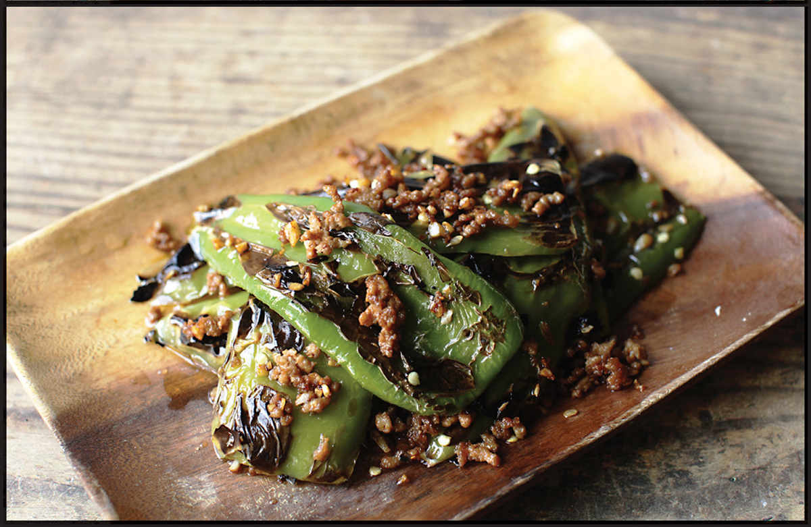
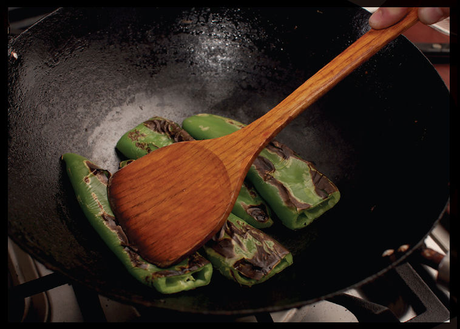
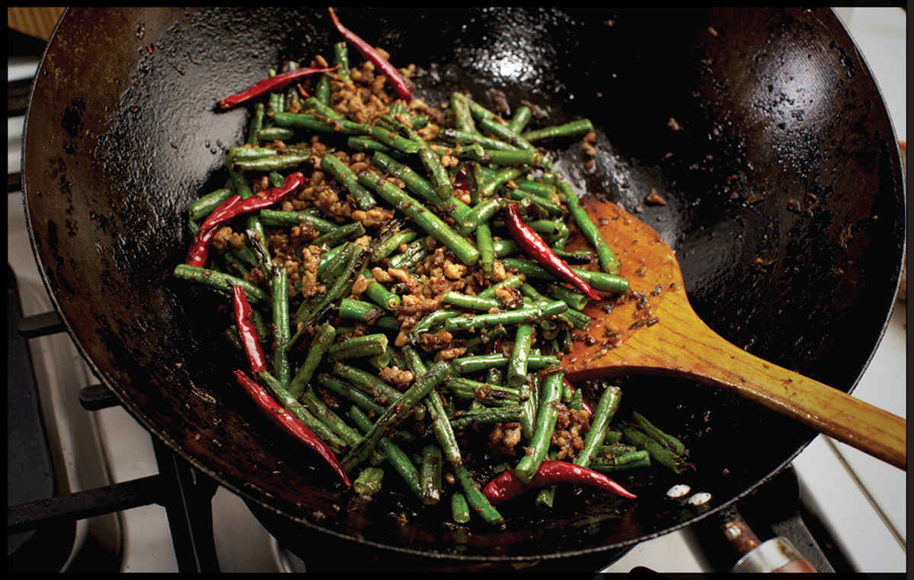

TIGER-SKIN PEPPERS

I remember driving through Hatch, New Mexico, during chile-roasting season one summer on a cross-country road trip. The smell that permeated the air was intoxicating. Smoky, charred, sweet, grassy, and hot.
A few summers later, on the opposite side of the planet, I smelled the same aroma at a restaurant in Chongqing, where I’d asked the chef to prepare their specialties. As the server deposited a plate at my table and I inhaled its scent, I was transported back to that summer driving through New Mexico. I guess charred, blackened chiles are a universally appealing aroma.
The dish was hupi qingjiao, or “tiger-skin peppers,” so called because of the way pepper skins will split as they char, forming stripes like a tiger’s coat. It’s a simple, chile-forward dish with only a few auxiliary ingredients to complement the pepper flavor. In Chongqing, the dish was made with small, moderately hot Hunan peppers called xiao qingjiao (literally “small green pepper”), but back here in the United States I use whatever I can get my hands on. When Hatch chile season rolls around and I can find them, I snatch them up. Otherwise, regular old Anaheims (a milder California cultivar of the same New Mexico chiles) or long green peppers from the Asian supermarket work well.
There are many techniques for roasting the chiles, but my favorite is the one that produces the most char: cooking the chiles in a dry wok, pressing on them firmly with the bottom of my wok spatula to get really good contact between the chiles and the metal. When the wok is the right temperature, you should be able to feel the vibrations in your spatula as the chiles bubble and split under the heat and pressure.
Once the chiles are tender and charred, the rest is a quick stir-fry of garlic seasoned with soy sauce. The recipe includes directions for adding pork to the stir-fry, but the pork is completely optional. I leave it out most of the time. The chiles are the real star here.
|
Yield Serves 4 |
Active Time 10 minutes Total Time 10 minutes |
This recipe will work with any green, moderately hot to hot chile, such as Chinese cowhorn chiles, padrón, or even serranos or jalapeños (if you like it real hot). The pork is optional. If you prefer to leave it out, just skip the bit where you stir-fry it in step 2, jumping straight to adding the garlic instead.
INGREDIENTS
12 ounces (350 g) fresh long green hot chiles such as Hatch or Anaheim (see Notes), stems removed
2 tablespoons (30 ml) peanut, rice bran, or other neutral oil
2 ounces (60 g) ground pork (optional; see Notes)
2 tablespoons (15 g) minced garlic (about 6 medium cloves)
1 tablespoon (15 ml) light soy sauce or shoyu
Pinch of kosher salt
Pinch of sugar

DIRECTIONS
1Heat a dry wok over medium-high heat until lightly smoking. Add the chiles, spread them into a single layer, and cook, tossing occasionally and pressing firmly on the chiles with a spatula to make good contact between the chiles and the wok. Cook until the chiles are blistered and browned on all sides, about 6 minutes total. Transfer the chiles to a bowl and set aside.
2Return the wok to medium-high heat until lightly smoking. Add the oil, swirl to coat, and immediately add pork (if using). Stir-fry until the pork is no longer pink, about 30 seconds then immediately add the garlic. Stir-fry until fragrant, about 15 seconds. Return the chiles to the wok and toss to combine. Splash in the soy sauce around the edges of the wok and season with a pinch of salt and sugar. Toss to combine, transfer to a serving platter, and serve with steamed rice.

Sichuan-Style Blistered Green Beans